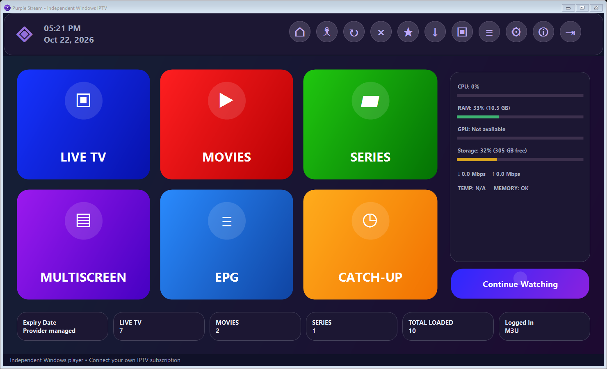
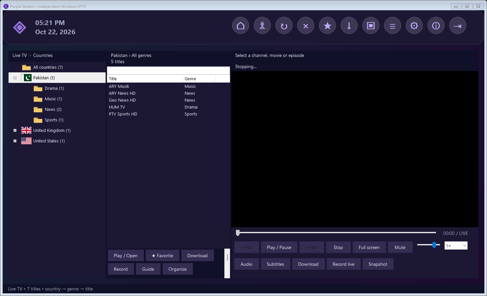
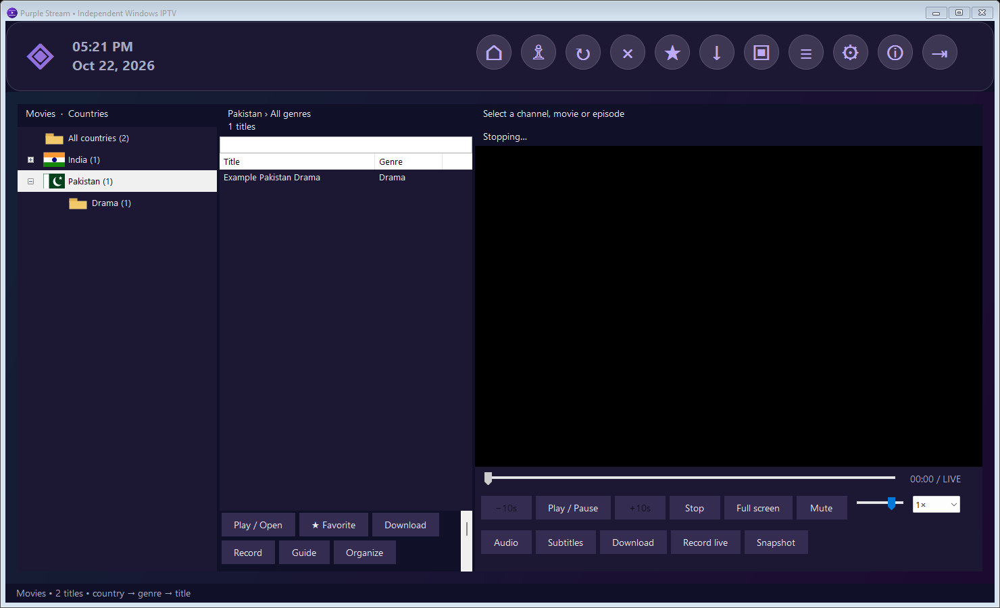
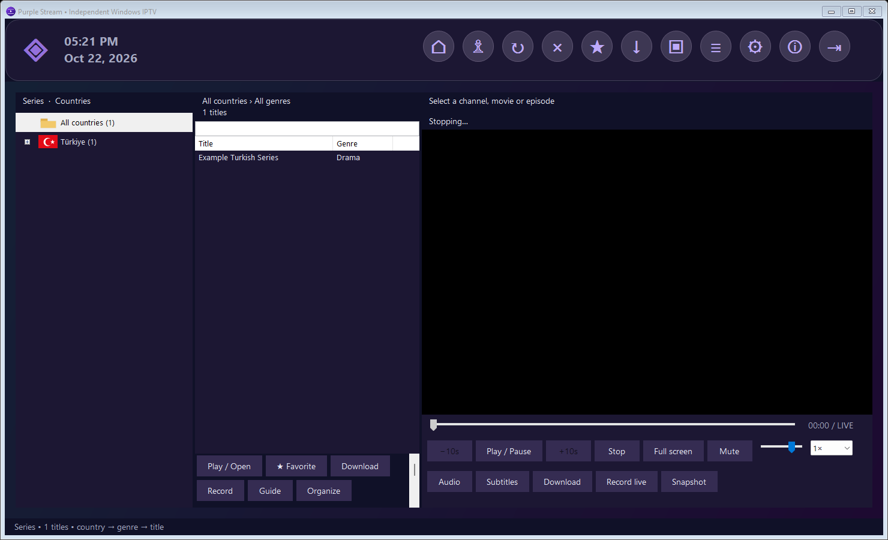
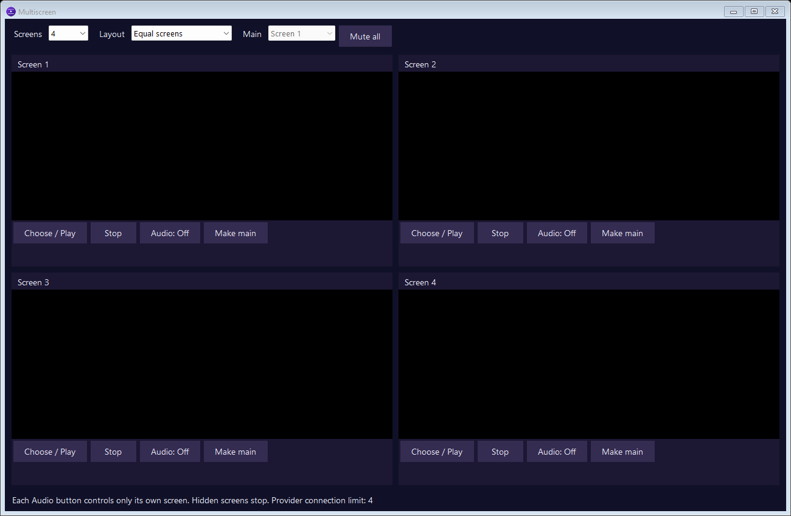

Country → genre → title
Browse Live TV, Movies and Series with country flags, searchable lists and manual category corrections.
NATIVE WINDOWS IPTV PLAYER
Bring your own playlist. Find your favorite channels by country and genre. Build a viewing space that fits you.
Windows 10/11 · x64 · Version 0.4.3 · No subscription included

LESS SEARCHING. MORE WATCHING.
Browse Live TV, Movies and Series with country flags, searchable lists and manual category corrections.
Choose 2, 3 or 4 screens, make one the main view, and control every screen's audio independently.
Download a movie or episode, record live programmes and return through favorites or viewing history.
*Schedules, archives, seeking, downloads and simultaneous streams depend on the provider and source. Recording uses a separate connection; preview stops by default to free one. No DRM circumvention.
INSIDE THE APP
Actual application captures with synthetic catalog data. No real accounts or live broadcasts are shown; multiscreen slots are empty to show their controls.




READY WHEN YOU ARE
Original application code is MIT licensed. LibVLC and other dependencies retain their own licenses. Purple Stream is not affiliated with Smart IPTV Stream Pro, its developer or any provider. No channels or accounts are bundled.
Use the repository's Releases section to download. Repository: AliKirmani/PurpleStream.